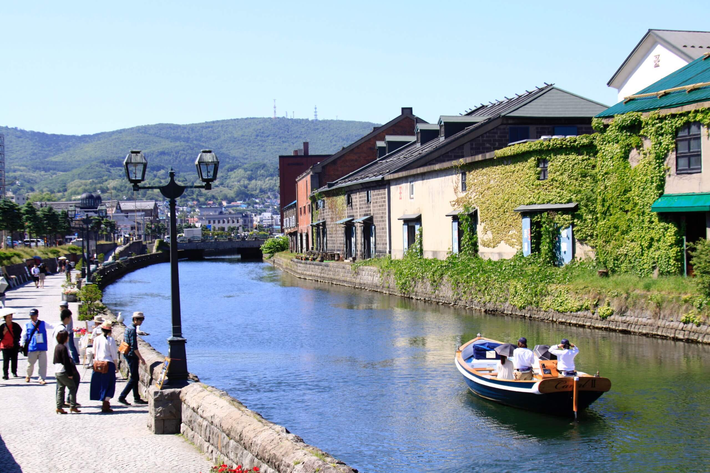

景點介紹
港口城市小樽在明治與大正時代（1868～1926 ）是北海道的商業和貿易中心。
當時建造的銀行和貿易公司等許多莊嚴石頭建築至今仍保留完好，形成了小樽運河周圍浪漫的城市景觀。其中一些年代悠久的建築已改造為飯店、餐廳和商店。小樽以新鮮海產和大量溫泉聞名。
探索歷史
鎮上許多驚艷的建築都可以追溯到小樽還是繁榮的貿易和商業中心的時期。運河邊許多擁有百年歷史的建築，現已被改造為商店、咖啡廳和玻璃製品工作室。夜幕降臨之後，夜晚時，煤燈會照亮沿倉庫而建的小路與運河，形成一幅美麗的風景。
交通方式
從札幌站 和新千歲機場，乘坐電車或巴士前往小樽最為方便。
從新千歲機場可以乘坐 JR 千歲函館本線快速列車，只需一小時出頭即可抵達小樽。從札幌站 乘坐快速列車前往小樽需要 30 至 35 分鐘。從札幌乘坐巴士前往小樽大約
1 小時 10 分鐘，而從新千歲機場出發則需要約 2 小時。